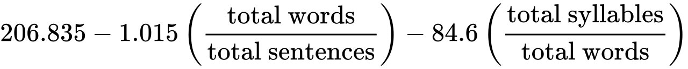
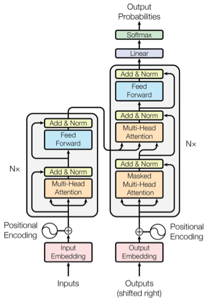

Descripción
El reporte de escucha social aplicado a temáticas populares parte de la necesidad de conocer la perspectiva ciudadana desde redes sociales acerca de los temas de interés que se encuentran con mayor redundancia. Esta herramienta comprende un análisis de información partiendo del proceso de scraping web y técnicas supervisadas de clasificación y predicción de clases, el flujo se muestra a continuación y posteriormente se describe cada una de las técnicas.
Nube de Palabras
Para la creación de una nube de palabras se utilizo la libreria WordCloud de Python en su versión 1.5, en la cual se lematiza el texto que se recupera en el proceso anterior y se filtra mediante una lista de “Stopwords”, la cual contiene palabras que se tiene que excluir y posteriormente se construye la gráfica con respecto al valor acumulado que la obtención de palabras centrales de la lematización relacionando el tamaño de la palabra y sus frecuencias.
Frecuencia de palabras clave
Para el cálculo de las frecuencias que se contabilizan por cada una de las palabras clave de utiliza la librería de spacy con el paquete de idioma “es_core_news_md”, en donde a partir de la lematización se puede extraer la frase principal de cada opinión y posteriormente la palabra clave de esa frase. Al finalizar este proceso se recuperan las distintas palabras obtenidas y se verifica si hay coincidencias de escritura a través de calcular la distancia de Levenshtein mediante la librería de hermetrics en Python para agruparlas en un diccionario de frecuencias acumuladas y posteriormente graficarlo.

Análisis de setimientos
El análisis de sentimiento es el estudio de las formas de comunicación que tiene por objeto comprender la intencionalidad de un mensaje y mejorar la comprensión de su contenido. Estos análisis permiten interpretar adecuadamente la información y buscar la empatía con los interlocutores.
Dentro del proceso que describe el análisis de los comentarios recuperados de la opinión pública se implementa una técnica de clasificación de sentimientos mediante la implementación de un modelo de redes neuronales tipo transformer que aprende contexto y, por lo tanto, significado mediante el seguimiento de relaciones en datos secuenciales.
El modelo se encuentra entrenado con los siguientes grupos de datos:
- TASS Dataset license
- SEMEval 2017 Dataset license
- LinCE Datasets
La red neuronal recibe como señal de entrada el valor de cada oración dentro de la opinión pública recuperada y se predice la polarización que refleja la intención sentimental, si tiende a ser negativa, positiva o neutral.
Lo anterior mencionado se incorporó por medio de la librería de python pysentimiento.

Legibilidad
Para medir el nivel de comprensión que tienen los textos analizados provenientes de la opinión pública se implementó la prueba de Flesch-Kincaid. La prueba a través de un cálculo que toma en cuenta la estructura otorga al texto un valor dentro de una escala de puntos. Cuanto más elevado sea el resultado, más fácil será comprender el documento.
En promedio se busca un resultado comprendido entre 60 y 70 aproximadamente para optimizar la comprensión y correcta lectura de cualquier texto, la fórmula que se integró para la obtención de dicho score es la siguiente:
Referencias
- Hammond, M. (2022, 29 septiembre). Qué es el análisis de sentimiento y 11 herramientas para realizarlo. https://blog.hubspot.es/service/analisis-de-sentimiento
- Merritt, R. (2022, 19 abril). ¿Qué Es un Modelo Transformer? | Blog de NVIDIA. Blog oficial de NVIDIA Latino América. https://la.blogs.nvidia.com/2022/04/19/que-es-un-modelo-transformer/
- Mueller. (2018). WordCloud for Python documentation — wordcloud 1.8.1 documentation. https://amueller.github.io/word_cloud/
- Peréz. (2021, julio). GitHub - pysentimiento/pysentimiento: A Python multilingual toolkit for Sentiment Analysis and Social NLP tasks. GitHub. https://github.com/pysentimiento/pysentimiento
- Ward. (2022, 15 marzo). textstat. PyPI. https://pypi.org/project/textstat/
- Yuncal, A. (2019, 26 junio). ¿Sabes qué es en SEO el test Flesch-Kincaid? https://www.linkedin.com/pulse/sabes-qu%C3%A9-es-en-seo-el-test-flesch-kincaid-antonio-yuncal/?originalSubdomain=es